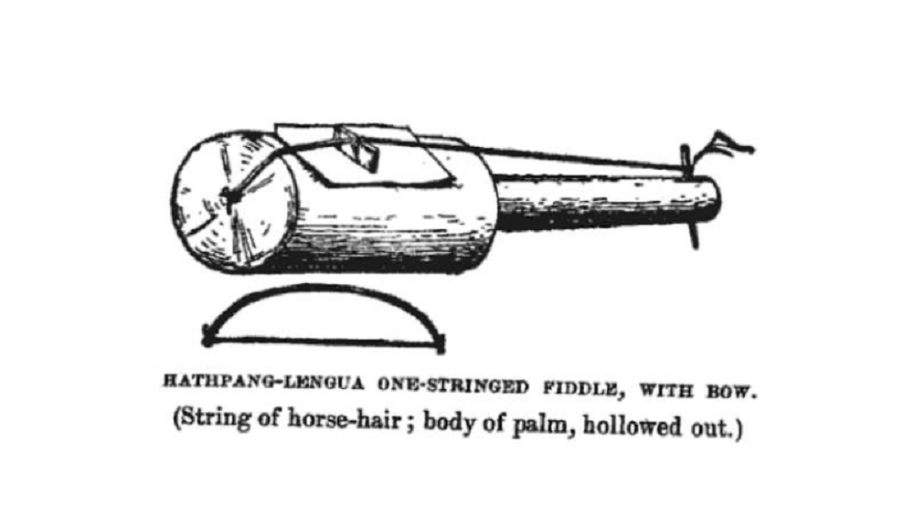

Hathpang y mbiké
Apunte 011
Inicio > Blog Bitácora de un músico > Apunte 011
Violines de una cuerda del Chaco
En 1911, el misionero anglicano W. Barbrooke Grubb publicó An Unknown People in an Unknown Land ("Un pueblo desconocido en una tierra desconocida"), un relato sobre los Enxet (entonces conocidos como "Lengua") del Chaco paraguayo. Entre las observaciones culturales incluidas en el libro se encuentra una breve descripción de un instrumento de cuerda frotada de una sola cuerda llamado hathpang. Grubb describe un cuerpo hueco de madera de palma cubierto con piel animal, provisto de una cuerda de crin de caballo y que se toca con un arco aparte, también con cuerdas de crin.
La descripción es concisa. Sin embargo, desde el punto de vista organológico, es notable.
Una sola cuerda tensada sobre un resonador cubierto por una membrana y activada por la fricción del arco sitúa al instrumento dentro de la amplia familia de los cordófonos de cuerda frotada. Estructuralmente, se asemeja al mbiké documentado entre las comunidades Qom ("toba") del Chaco argentino durante el siglo XX, particularmente en la obra de Carlos Vega y otros etnomusicólogos argentinos posteriores.
La comparación es significativa porque los cordófonos de arco ocupan un lugar marginal en la mayoría de los estudios generales sobre las tradiciones instrumentales indígenas sudamericanas, que tienden a enfatizar los aerófonos y los instrumentos de percusión. La existencia de estos violines del Chaco complica las simplificadas distribuciones regionales.
Estructura y ubicación organológica
Según la descripción de Grubb, el hathpang parece haber incluido un resonador tallado en madera de palma, una caja de resonancia con una tapa hecha de piel animal, una sola cuerda, supuestamente de crin de caballo, y un arco separado, también de crin.
Las descripciones del mbiké Qom indican una configuración similar: un pequeño resonador cubierto de cuero, una cuerda y activación mediante arco. La variación de tono se logra mediante el contacto de los dedos a lo largo de la cuerda, en lugar de mediante la presión en el diapasón, múltiples cuerdas o trastes fijos.
Al mismo tiempo, la tradición del mbiké que ha sobrevivido también demuestra variabilidad material. Entre los ejemplos modernos documentados se incluyen, sobre todo, instrumentos construidos con materiales industriales, como latas quemadas de aceite de coche, que sustituyen a los resonadores anteriores. Esto no elimina la continuidad estructural, pero sí indica que el instrumento no puede considerarse una forma materialmente fija. La persistencia del principio de producción de sonido no implica necesariamente estabilidad en la construcción, el contexto o el significado.
Estos violines del Chaco pueden ubicarse morfológicamente dentro de una familia más amplia de instrumentos de cuerda frotada de una sola cuerda documentados en África, partes de Oriente Medio y Asia Central, así como en muchas tradiciones folclóricas europeas. La comparación estructural aclara la morfología, pero no establece, por sí sola, relaciones históricas.
La documentación y sus límites
Grubb no era musicólogo. Su descripción carece de detalles técnicos sobre la afinación, la organización de la escala, la técnica de ejecución, el repertorio o la función social. La documentación posterior del mbiké es algo más precisa, aunque sigue siendo fragmentaria en comparación con la extensa documentación disponible, por ejemplo, para muchos aerófonos andinos.
La situación probatoria es desigual. El hathpang en sí mismo no parece haber sobrevivido como instrumento vivo documentado.
En estas condiciones, la cautela se vuelve necesaria desde el punto de vista metodológico. La semejanza estructural entre el hathpang y el mbiké es clara, pero no se puede asumir una continuidad entre ellos. El mbiké, que ha sobrevivido, puede esclarecer la descripción histórica del hathpang desde el punto de vista organológico, pero no puede aportar pruebas de continuidad en el repertorio, la práctica interpretativa, el significado simbólico o la transmisión histórica.
La afirmación más segura es la similitud estructural, más que la identidad.
¿Difusión, adaptación o estabilización local?
En América no se encuentran cordófonos de arco precolombinos documentados con certeza. La fricción como principio de producción de sonido se asocia generalmente con procesos históricos posteriores al contacto con los europeos, ya sea a través de la presencia colonial europea, intermediarios afrodescendientes o intercambios interculturales más amplios.
Al mismo tiempo, la morfología involucrada es extremadamente simple. Un violín de una sola cuerda frotada requiere una complejidad estructural relativamente limitada: resonador, membrana, cuerda, tensión y fricción. Instrumentos similares aparecen en diversas regiones del mundo, con formas que no necesariamente están conectadas históricamente de manera directa.
Por lo tanto, los instrumentos del Chaco presentan un problema de interpretación. No son simples adaptaciones de violines europeos ni vestigios claramente identificables de ninguna tradición externa. La evidencia actual no permite llegar a conclusiones definitivas sobre su origen o transmisión.
Lo que sí se puede afirmar con mayor certeza es que la tecnología de cuerdas frotadas se integró localmente en al menos algunas prácticas musicales indígenas del Chaco durante el período colonial o poscolonial.
Más allá de eso, la documentación es demasiado limitada para respaldar afirmaciones históricas más contundentes.
Reconsiderando el panorama instrumental del Chaco
El hathpang y el mbiké siguen siendo singularidades dentro del panorama instrumental documentado de la música indígena latinoamericanas. Actualmente, parecen ser uno de los pocos violines indígenas de una sola cuerda documentados en la región.
Su rareza no resuelve las incógnitas históricas que los rodean; al contrario, las intensifica.
Uno de los instrumentos sobrevive a través de descripciones históricas escasas. El otro persiste en formas fragmentarias y materialmente transformadas. Ambos ocupan un espacio poco documentado dentro de la organología sudamericana.
Por esta razón, estos instrumentos son importantes no porque desbaraten el perfil predominantemente aerófono de la música indígena sudamericana, sino porque exponen la incompletitud de los mapas instrumentales, generalmente simplificados en grado sumo. Incluso una configuración mínima de cordófono basta para revelar procesos históricos que solo son parcialmente visibles en la documentación.
Los violines del Chaco no pueden ofrecer una historia alternativa de los cordófonos indígenas americanos. Solo marcan una zona pequeña e incierta dentro de esa historia, cuyos contornos aún no se han definido.
Lecturas
- Civallero, Edgardo. Instrumentos tradicionales de cuerda frotada en el Chaco. A contratiempo: Revista de música en la cultura (Biblioteca Nacional de Colombia), nº 27, septiembre 2016.
- Grubb, W. Barbrooke. An Unknown People in an Unknown Land. London: Seeley, Service & Co., 1911.
- Pérez Bugallo, Rubén. Catálogo ilustrado de instrumentos musicales argentinos. Buenos Aires: Ediciones del Sol, 1993.
- Vega, Carlos. Los instrumentos musicales aborígenes y criollos de la Argentina. Buenos Aires: Centurión, 1946.
Video. Del usuario de YouTube Cultura Chaco.